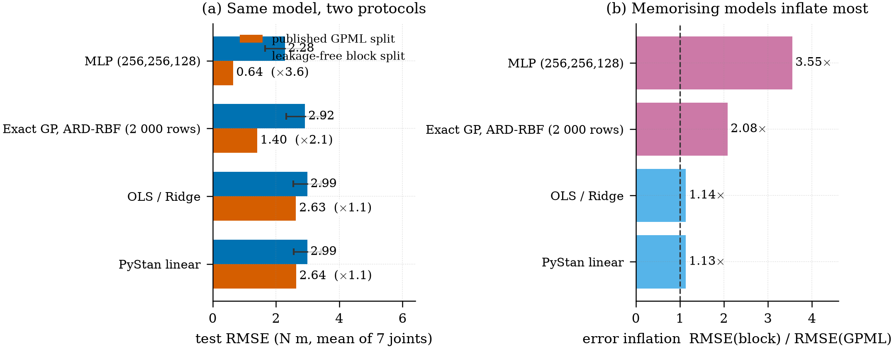

SARCOS inverse dynamics with Agents
一个主要由 LLM Agent 完成的 Python 仓库：数据管道、三条模型线、一次泄露审计
GPML 发布的 sarcos_inv_test.mat「测试集」里有 99.93 %（4 449 行中的 4 446 行）原样出现在训练文件里， 而且这份记录是按时间排列的。于是这个仓库里的每个模型都被打分两次： 发布版划分，以及一个无泄露的连续分块留出（4 折，两侧各留 100 行空隙）。
修好划分之后，模型排序活了下来，误差尺度没有——而且偏移量是按模型变化的： MLP 0.64 → 2.28 N·m（×3.6）、精确 GP 1.40 → 2.92（×2.1）、线性 / Bayesian ridge 2.63 → 2.99（×1.13）。 容量买到的东西，远没有发布版划分显示的那么多。
完整站点：https://math4mad.github.io/SARCOS-ML-with-Agents/ ｜ 仓库：https://github.com/math4mad/SARCOS-ML-with-Agents
问题设定 · The problem
SARCOS（Rasmussen & Williams 的 GPML 数据页， 数据由 Stefan Schaal 一组人的 LWPR 工作产生 (Rasmussen 和 Williams 2006a, 2006b)）是一个 7 自由度拟人机械臂的逆动力学问题：
| 输入 | \(21 = 7\) 关节位置 \(q\) + \(7\) 速度 \(\dot q\) + \(7\) 加速度 \(\ddot q\) |
| 输出 | \(7\) 个关节扭矩（N·m），.mat 的第 22–28 列 |
| 发布版规模 | 训练 44 484 行 / 测试 4 449 行 |
| GPML 惯例 | 只用第 22 列（第一个扭矩）报告结果 |
| 本仓库报告 | 7 个扭矩的平均测试 RMSE（N·m），并附 torque1 以便与书对齐 |
输入输出只用训练集统计量做 z-score，预测值还原后再打分。
一次可执行的审计 · An executable audit
python -m sarcos.data audit逐行哈希的结果：4 446 / 4 449 测试行与某一行训练数据字节相同； 相邻行的标准化距离中位数是 \(0.48\)，随机行对是 \(5.99\)——记录是时间有序的。 这条检查写在 tests/test_data.py 里被断言，所以这个结论不会悄悄腐烂。
由此得到无泄露协议 block：把整条记录切成 4 段连续块，留出其中一段， 两侧各丢 100 行，保证没有时间相邻的行漏进训练集。所有模型用同样的 4 折，跨模型比较才成立。

三条模型线 · Three model tracks
scikit-learn 线性基线（linear_sklearn.py）：constant、OLS、RidgeCV、逐关节 LassoCV / ElasticNetCV。 线性拟合顺手做了一次物理体检——最强的系数落在加速度项上（torque1 的 acc1 ≈ 1.17，标准化单位）， 这正是逆动力学该有的样子：扭矩由惯性乘角加速度主导。
scikit-learn MLP（nn_sklearn.py）：MLPRegressor(relu, adam) 做结构扫描，10 % 训练行早停。 发布版划分上它比 ridge 好 4 倍（0.64 vs 2.63）；分块留出上它仍是最强的（2.28 ± 0.63）， 但对线性模型的优势从 ×4.1 掉到 ×1.3。而且容量不解决问题：(32,32) → 2.42，(256,256,128) → 2.28， 在折间噪声里是平的。
GPyTorch 精确 GP + ARD（gp_gpytorch.py）：逐关节独立 GP，\(y_j = c_j + f_j\)， \(f_j \sim \mathcal N(0, s_j^2 k_{\text{ARD-RBF}})\)，MAP 拟合（Adam 直接优化精确边缘似然）， 预测用 fast_pred_var。44 484 行的核矩阵是 \(44\,484^2\) 个 double，精确 GP 只能吃子样本， 于是「误差 vs 数据量」本身成了主角：
| 训练行数 | 250 | 500 | 1 000 | 2 000 |
|---|---|---|---|---|
torque1 RMSE（GPML 划分） |
8.04 | 4.71 | 5.11 | 3.98 |
torque1 RMSE（分块留出） |
8.33 | 9.14 | 8.14 | 8.82 |
发布版划分上「更多数据 = 更好模型」，诚实划分上曲线是平的：精确 GP 在这里是数据饥饿，而不是核选错， 下一步是 SVGP。ARD 长度尺度（torque1，越短越重要）： acc1=1.70、acc4=2.76、pos5=3.15、acc3=3.74、pos1=4.39——又是加速度优先。
PyStan 贝叶斯线性回归（bayes_pystan.py + models/sarcos_linear.stan）： \(\alpha\sim\mathcal N(0,5)\)、\(\beta\sim\mathcal N(0,1)\)（标准化输入上，即 ridge 先验的贝叶斯版）、 \(\sigma\sim t_4^+\)，NUTS 4 链。后验均值的误差与 OLS 在噪声内相同（似然本来就一样）， 多出来的是可信区间与诚实的预测分布。
不确定度才是交付物 · Uncertainty is the deliverable
| 模型 | 名义 95 % 覆盖（GPML 划分） | 真实段偏移下的覆盖（分块） |
|---|---|---|
| 精确 GP（ARD-RBF） | 0.978 – 0.985（宽得没必要） | 0.80 – 0.97，均值 ≈ 0.91 |
| PyStan 线性 | 0.94 | 0.87 |
| OLS / Ridge / MLP | 没有区间 | 没有区间 |
被污染的划分上，GP 的区间「好得离谱」——它见过这些点；一旦换成没见过的运动片段，覆盖就掉下来。 线性与神经网络基线根本没有预测区间，这才是这里选 GP / Stan 的理由，而不是 RMSE。
只引用一个数字的话 · If you quote one number
- 引分块留出的 RMSE：线性 2.99、MLP 2.28、GP 2.92 N·m，并说明协议。
- 发布版 GPML 划分的数字有效但偏乐观（局部模型被压低 2–4 倍）；
kNN-20在那里报 0.45 N·m， 因为它在读答案。 - 全部可复现：
bash scripts/run_all.sh（约 50 分钟，纯 CPU）。
仓库是怎么长出来的 · How this repo was built
数据管道、三条模型线、划分审计、协议测试、说明页与 CI 全部由 Agent 完成 （qwen3.8-flash，在 Pi 编码环境里），人类的角色是：给出问题、验收结论、 把「哪个数字可以当标题」这件事定下来。
SARCOS-ML-with-Agents/
├── src/sarcos/
│ ├── data.py # 下载 + 逐行哈希审计（python -m sarcos.data audit）
│ ├── linear_sklearn.py # constant / OLS / RidgeCV / LassoCV / ElasticNetCV
│ ├── nn_sklearn.py # MLPRegressor 结构扫描 + 早停
│ ├── gp_gpytorch.py # 逐关节精确 GP，ARD-RBF，MAP + 数据量扫描
│ ├── bayes_pystan.py # Stan NUTS（PyMC 作为 --engine 备选）
│ └── summary_table.py # artifacts/metrics/*.json -> summary.csv / summary.md
├── models/sarcos_linear.stan
├── tests/test_data.py # 泄露与协议断言：结论不会悄悄腐烂
├── scripts/run_all.sh # 一条命令复现全部数字
└── .github/workflows/quarto-gh-pages.yml局限与下一步 · Limitations
- 精确 GP 不上规模：结果用的是 ≤ 4 k 行子样本。下一步
SVGP（自然梯度 / 诱导点选择），然后是全量 44 k 行。 - 每个输出一个 GP 忽略了 7 个扭矩之间的强相关：ICM / LMC 多输出核是自然的扩展。
- 分块留出仍然只有一条轨迹：更严格的协议是按动作段划分，但原始日志里没有我们拿不到的分段边界。
- PyStan 在 Python 3.14 上的多链采样仍需
cores=调参；PyMC 作为同一模型的后备引擎已就位。
相关页面 · See also
- 下一步：在一族函数空间里搜索「谁生成了数据」 —— 这个仓库之后的第一次追问。
- 代码片段：在候选函数空间中搜索「谁生成了数据」 —— 那次追问的最小可运行验证。